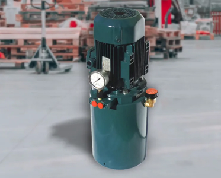
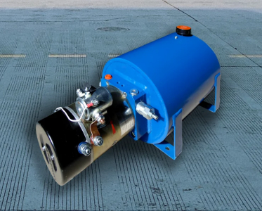
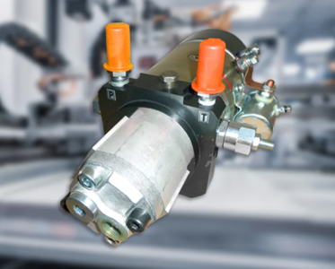

Наші переваги
-
Вироблено в Україні
Гідравлічні міні гідростанції СГМ є власною розробкою, мають оригінальну конструкцію та дизайн та виготовляються з 2002р.
-
Професійність
Наші спеціалісти мають значний досвід у конструюванні та виготовленні насосних установок, розробці гідросхем. Надаємо консультації для клієнтів.
-
ІНДИВІДУАЛЬНИЙ ПІДХІД
Розробка оптимальної гідравлічної схеми, підбір аппаратури і двигуна, а також виконання міні гідростанції (горизонтальне або вертикальне).
-
ПУНКТУАЛЬНІСТЬ
Завдячуючі блоковій конструкції виготовлення гідростанцій відбувається в стислий термін.
Наша продукція
-

гідростанції з двигуном змінного струму
Класичне виконання міні-гідростанцій з трьохфазним (380В) або однофазним (220В) двигуном змінного струму (AC). Можливе комплектування двохшвидкісними двигунами.
-

гідростанції з двигуном постійного струму
Основна перевага гідростанцій з двигуном постійного струму (DC) - мобільність. Станції працюють від аккумулятора (12 або 24В) в місцях відсутності дротової мережі живлення: автотранспорт, мобільні пересувні гідрофіковані підьйомні пристрої тощо.
-

Малогабаритні насосні агрегати
Малогабаритні гідравлічні насосні агрегати використовуються як енергетичний модуль. Вони складаються з приводного електродвигуна, шестерневого гідронасоса, запобіжного клапана, та муфти.
Технічні характеристики
-
Гідроаппаратура:
На гідростанції встановлюються клапани, розподільники, дросселі та ін. аппаратура модульного монтажу.
-
Електродвигун:
Однофазний (220В) або трьохфазний (380В); постійного струму (12 або 24В); Потужність від 0,25 до 3 кВт.
-
Гідравлічний насос:
Гідронасос вбудований в бак, забезпечує продуктивність гідростанції 0,2...10 л/хв. Діапазон робочого тиску становить 6,3...25МПа.
-
Бак для масла:
Стальний бак має ємність від 2 до 14 літрів. На баці встановлено заливну горловину з повітряним фільтром та зливну пробку.
Як підібрати гідростанцію
Для правильного вибору гідростанції при замовленні необхідно вказати такі вихідні данні:
-
Швидкість руху поршня
-
Час робочого ходу штока
-
Хід гідроциліндра
-
Зусилля на штоці гідроциліндра
-
Гідравлічна схема
-
Напруга живлення двигуна
-
Режим роботи гідростанції
Як оформити замовлення
-
Узгоджуємо технічні характеристики за телефоном або email.
-
Підтверджуємо замовлення. Можлива 50% предоплата вартості гідростанції.
-
Здійснення повної оплати відбувається по готовності гідростанції.
-
Доставка гідростанції здійснюється транспортними компаніями.